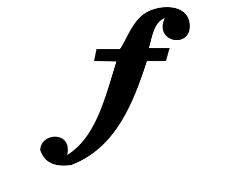

フォルテ
フォルテとは
・概要…フォルテ(f)はよく使われる強弱記号の1つで「強く」という意味を持ちます。
・ポイント…単に「強く」という意味じゃない！！
「強い」という意味だからといって、単に声量を大きくしてはいけません。より空間を大きく使うイメージで歌いましょう。
実際に聞いてみよう！
フォルテによってどのように表現が変わるのか、実際に聞いてみましょう。
わかりましたか？フォルテを加えたことで、曲に、より壮大な印象を与えることができました。
実際に歌ってみよう①
ここでは実際に歌っていきましょう！
練習手順…①「録音」ボタンで録音をする
②各再生機能を活用し、お手本に近づけていく
音楽記号を知識としてだけではなく、技術にも落とし込むことがゴールです🌟
システムの性質上、必ずイヤホンを使用するようにしてください
※各ボタンの説明
録音：流れる音声に合わせて自分の声を録音します(「実際に聞いてみよう！」で流れた音声と同じテンポ・音で歌います)
録音停止：録音を終える際は必ずこのボタンを押してください
録音再生：録音した自分の声を聞くことができます。
同時再生：録音した自分の声とお手本の声が同時に再生されます
スロー同時再生：「同時再生」をスローで再生することができます